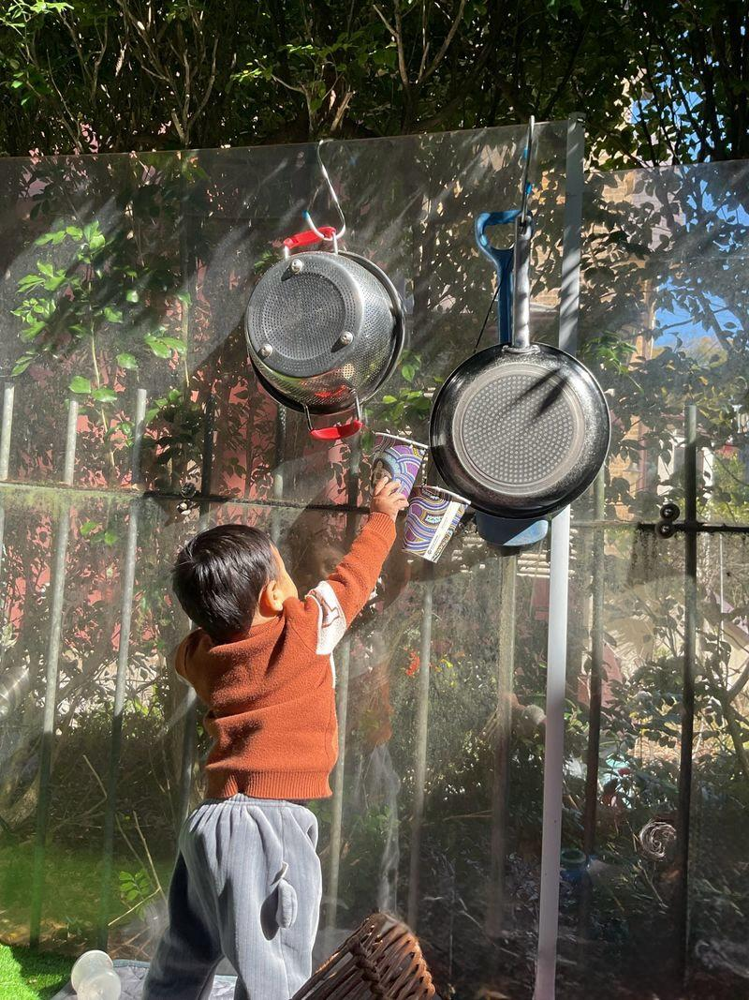

Things I Love ❤️
From splashing water to making music with kitchen utensils, Osiris has plenty of favourite things — and sometimes the most exciting things aren’t toys at all.
Lots of little favourites 🍓
Dogs!
Seeing a dog immediately gets Osiris’s attention. He loves watching them and wants to get close enough for a gentle pat. A pet cat is part of his everyday world too.
Favourite songs
Hop Little Bunnies, Baby Shark, Tali Bajau and Meow Meow Biralo are in the current mix.
A familiar face
When he does have a little screen time, Ms Rachel is a familiar favourite — but screens are not a big part of his day.
Favourite books
Interactive and flip books are much more interesting when there is something to open, touch or discover.
01 💦 Water
Splashing it, touching it and watching it move. The little fountain at home is difficult to resist.
02 🥁 Making sounds
Plastic bottles, steel utensils and sticks can all become instruments if they make an interesting noise.
03 🎈 Balloons
Especially watching a balloon floating through the air.
04 🙈 Peek-a-boo
Hide-and-seek and peek-a-boo are always ready for another round.
05 🧱 Build... then destroy!
Stacking is interesting. Dismantling and knocking things down can be even better.
Ordinary objects are fascinating.
A plastic bottle. A steel utensil. A stick. Something that rattles, moves, opens or makes a noise. For Osiris, the question is not whether something is a toy — it is “What can I do with this?”
One current fascination is the apartment intercom handset, which naturally deserves a full investigation too.


Dad for adventures. Mum = milk. ❤️
Dad is a favourite partner when it is time to play, explore and have an adventure. But seeing Mum can mean something entirely different. Some associations are apparently very important.